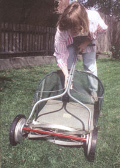

THERE IS MUCH MISUNDERSTANDING about the use of the word organic. When it comes to using the word in relation to lawn care, misunderstanding becomes outright confusion. Many people depend heavily on the use of chemical pesticides, herbicides, and fertilizers to keep lawns healthy. These chemicals, however, can cause damage to plants that are not being sprayed but are in the vicinity, can cause harm to passing or resident animals, and in extreme cases can cause soil and water pollution if they are overused or used improperly.
It has been said that where these chemicals are used by many residents, they can enter into the food or water supply and become a direct danger to people's health. For these reasons, it's important that we keep our lawncare methods as natural and organic as possible.
In the case of fertilizing, there are many products and procedures that can be considered organic and natural:
1. Simply cut your lawn without a bag and leave the clippings to feed the lawn. Or better yet, use an up-to-date mulching mower to grind the grass up to usable proportions for your lawns.
2. Use ground manure in light and regular amounts, since just leaving the clippings does not provide enough of the major and micro nutrients to keep a lawn at peak condition.
3. If manure is not available, then use minimally processed sewage, another natural form of fertilizer (in most cases there is no other use for the substance and there is a lot of it produced naturally on a regular basis!).
Most synthetic fertilizers are made up of the exact same elements as natural fertilizers, such as manure. The only difference is that synthetic fertilizers are more concentrated. This means that you must use far more of a natural fertilizer to get the same results you achieve with the synthetic.
Do not let the word synthetic fool you. Many individuals define the word as something that is unnatural and therefore undesirable. In the case of fertilizer, this is not quite true. Synthetic just means concentrated and not produced by an organism. While potassium is extracted from plant matter naturally by the digestion of an animal, it is synthetically extracted from plant matter by a more efficient but mechanical means. However, the use you put it to is organically still the same.
Unfortunately, the most effective pesticides are inorganic. If an organic method is desired there are not many options.
1. In cases where a certain pest is known to exist, choose and plant a cultivated variety of grass that might be resistant to or unaffected by the particular pest. This is a limited option.
2. In recent years, certain diseases, such as milky spore disease, are being studied, developed, and used that are entirely passive to a lawn but will in time totally decimate a particular pest. The above-mentioned disease, for example, attacks Japanese beetles, but can take five years to spread far enough to be effective. It could be many years before this means of ridding an average lawn of a troublesome pest is developed well enough to be of more than limited use.
3. A last method is to introduce a pest into a lawn that is passive to grass but will devour any lawn pests. Because there are always unforeseen ramifications when an outside predator is brought in to a new and unprepared ecological cycle, this method has not yet seen active commercial or home-lawn use.
At this point in time, all biological methods of pest control seem to have the same negative traits. They only attack one type of pest and they take up to several years to work. This is more than likely to change at some point. The best way to stay apprised of any possible changes is to maintain good contact with a local nursery person.
All chemical herbicides are considered inorganic in nature. Some kill only weed seeds and others will attack only weed roots. Some chemicals only kill a weed's leafy structures, leaving the main stem to die without nourishment. But the cumulative effects on the water table and food supply are still the same. The organic methods of weed control are simple to recognize but difficult to put into practice
1. Pull weeds out by hand. This takes time and effort-and only two-thirds of the pulled weeds are permanently removed. The reason is that it is just about impossible to remove the entire root of a weed from the intertwined root system of a growing lawn. A good example of this problem is the dandelion. This weed sends down a root sometimes as deep as two feet. And if upon removal only two inches is left, the weed will return.
2. Keep a lawn thatched and well aerated for good drainage. Institute a good fertilizing and watering program. A healthy lawn is the best deterrent for weeds. When a lawn is thick and green, weeds cannot find a place to take root. When thatch has been kept to a minimum, weed seeds and fungus will find no place to shelter and grow.
3. Plant cultivated varieties of grass that are resistant to weeds prominent in your location.
4. Maintain a good mowing schedule to keep many weeds from flourishing. When stems and leaves are chopped on a regular basis, some weeds will die from sustained damage. Others are kept cut down to an almost unnoticeable low profile.
Unfortunately, the organic battle against weeds is an endless and ever-occurring thing. Weed seeds permeate soils by the millions and they are continuously reshuffled and moved around by animals, people, and machines. But remember that even with the use of an effective herbicide, this battle will go on.
Most methods of organically mowing a lawn are not very feasible or efficient. One is using a grass-eating herbivore to devour the blades as they grow. Sheep will do the job, and so will horses! But they are not too meticulous about keeping the grass even, and in most urban areas there are zoning laws that would keep them out even if they did an impeccable job.
Why would someone want a method for organic lawn mowing? Because with the number of lawns created around the world and the amount of pollution contributed by the mowing machines cutting these lawns, many people are searching for a better way. Here are two plausible, reasonably ecologically sound lawn-mowing methods:
1. Instead of using a gas-powered mower, use an electric mower. They are quiet, they do not pollute directly and they are very efficient in terms of starting, running, and wear ratios. The only drawback is the necessity of obtaining and using an extension power cord that is long enough to reach every corner of the area to be mowed.
2. Do not let your lawn grow fast. It is not possible to maintain a thick and beautifully green lawn this way, but if only a bare minimum of fertilizer is used and if the watering cycle is cut back just enough to keep the lawn a greenish-yellow and not brown, then a lawn will grow very slowly. With this method, a lawn that normally must be cut each week will only need it once every three weeks. But don't allow the lawn to dry out enough to turn brown.
As people grow more concerned about the environment and laws are passed to protect the planet from harmful substances, new methods for old procedures are developed. In one large city in California, a bill has been proposed that would require all residents in the city limits to use electric mowers. This was an attempt to do something to cut back on the air pollution, but regardless of the reason, it made considerably more difficult the "business as usual" approach to lawn care.
In some other states where drought has continued for three years or more, fines of up to $1,000 have been issued to citizens who continued the regular practice of watering their lawns in spite of emergency orders to the contrary. In many of these areas, new methods of landscaping that do not require such constant watering and maintenance are being developed and used. These designs are called xeriscapes.
The idea behind a xeriscape is to have a landscape that requires little or no watering and little or now weeding. This would, of course, preclude all use of weed killers, pesticides, and fertilizers. But they are little comfort those of us who still love a lawn and they do not help with watersheds or oxygen production.
But whether this pointed disfavor grows or not, the only method of turning the environmental eye away from current methods of quality lawn care is to develop truly efficient and usable natural means of maintaining lawns. The beauty that is presented by deep green carpets of grass is too great to risk its being lost because such methods are not ecologically responsible.
Editor's Note: Lane L. Winward, a professional landscaper in Salt Lake City, Utah, is the author of the Healthy Lawn Handbook: The Complete Guide to the Perfect Home Lawn-Lawn Care, Fertilizers,Watering, Weed Control, Mowing Tips, and More-with Practical Tips From a Professional Landscaper. Winward's book is available for $15.45 postpaid from Lyons & Burford, 31 W. 21st St., New York, NY 10010.
|
 |
|
|